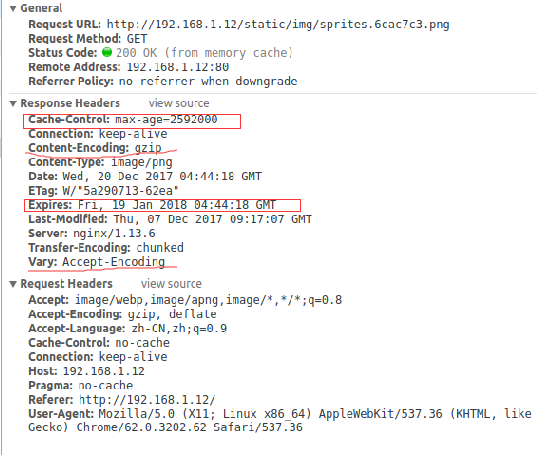
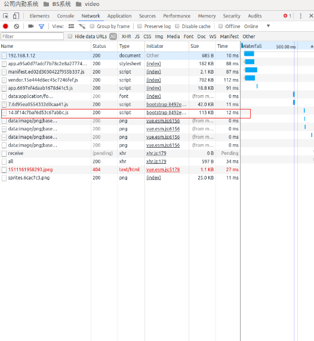
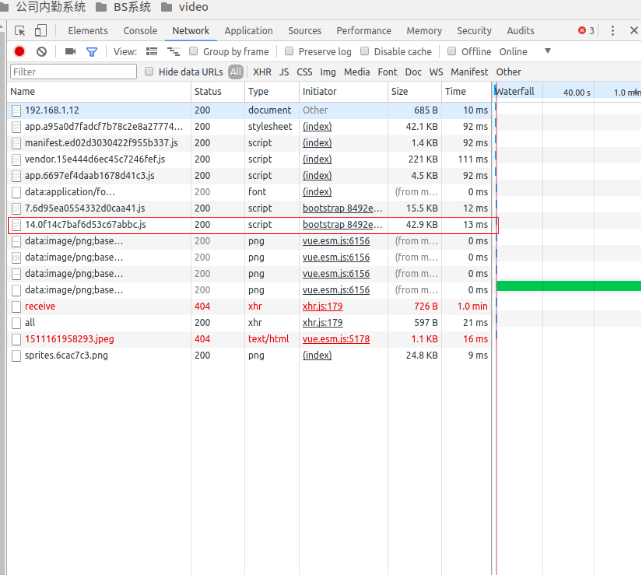
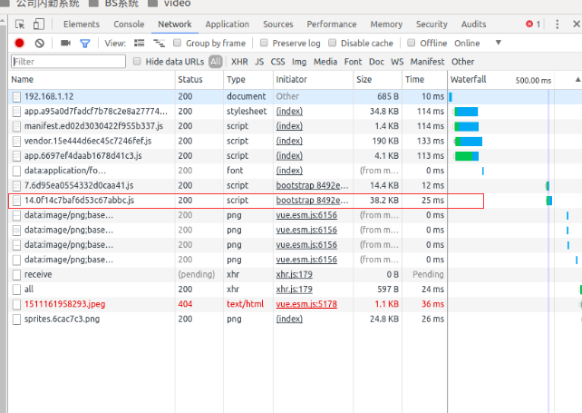

nginx
前面
与apache使用面向进程或线程的方式处理请求不同，nginx使用异步事件驱动模型在负载下性能更突出
可以防止外网对内网服务器的恶性攻击、 缓存以减少服务器的压力和访问安全控制之外，还可以进行负载均衡，（把请求转发给给服务器，决定哪台目标主机来处理当前请求） 将用户请求分配给多个服务器
window下
window下安装非常简单，直接到官网下载，解压就可以了
这里有个服务器是window server2016，遇到了一个填坑啊，大大的冤枉．我配置好之后所有的接口404,怎么也找不到那里配置出来错误，后来发现一个奇怪的现象我把./nginx.exe -s stop, 有个fail好像说logs/nginx.pid 找不到了，具体忘了，我的理解就是nginx.exe已经关闭了．但是，偶然发现浏览器里面还能访问到页面？？打开任务管理器发现一大堆nginx进程．明白了．．
我stop并没有关掉进程，每次start又开启了一个进程，修改配置后reload是行不通的，必须在任务管理其中结束后重启nginx
ubuntu下安装
1. 安装nginx的依赖包
# 查看zlib是否安装
dpkg -l | grep zlib
# 解决依赖包openssl安装
sudo apt-get install openssl libssl-dev
# 解决依赖包pcre安装
sudo apt-get install libpcre3 libpcre3-dev
# 解决依赖包zlib安装
sudo apt-get install zlib1g-dev
2. 下载nginx
# 下载nginx
wget http://nginx.org/download/nginx-1.13.1.tar.gz
# 解压nginx
tar -xzvf nginx-1.13.1.tar.gz
# 重命名文件夹
mv nginx-1.13.1 nginx
cd nginx
3. 安装
#配置：
./configure --prefix=/usr/local/nginx
#编辑nginx：
make
注意：这里可能会报错，提示“pcre.h No such file or directory”,具体详见：http://stackoverflow.com/questions/22555561/error-building-fatal-error-pcre-h-no-such-file-or-directory
需要安装 libpcre3-dev,命令为：sudo apt-get install libpcre3-dev
#安装nginx：
sudo make install
命令
./sbin/nginx #启动 Nginx
./sbin/nginx -s stop #停止 Nginx
./sbin/nginx -s quit
./sbin/nginx -s reload #Nginx重新加载配置
./sbin/nginx -c /usr/local/nginx/conf/nginx.conf #指定配置文件
./sbin/nginx -v
./sbin/nginx -t #检查配置文件是否正确
问题
注意启动权限问题 sudo
端口被占用
killall -9 nginx（先停掉nginx） 2 nginx或service nginx restart（重新启动）
代理
在nginx中配置proxy_pass代理转发时，如果在proxy_pass后面的url加/，表示绝对根路径；如果没有/，表示相对路径，把匹配的路径部分也给代理走
#第一种：
location /proxy/ {
proxy_pass http://127.0.0.1/;
}
#代理到URL：http://127.0.0.1/test.html
#第二种（相对于第一种，最后少一个 / ）
location /proxy/ {
proxy_pass http://127.0.0.1;
}
#代理到URL：http://127.0.0.1/proxy/test.html
#第三种：
location /proxy/ {
proxy_pass http://127.0.0.1/aaa/;
}
#代理到URL：http://127.0.0.1/aaa/test.html
#第四种（相对于第三种，最后少一个 / ）
location /proxy/ {
proxy_pass http://127.0.0.1/aaa;
}
#代理到URL：http://127.0.0.1/aaatest.html
代理例子：
upstream server1 {
server localhost:8080;
}
location /api/ {
proxy_pass http://server1
}
upstream 不加http:// ; location 需要添加http
均匀负载
链接多个server
upstream server1 {
server localhost:8080;
server localhost:8081;
}
weight 负载 权重(轮询)
upstream server1 {
server localhost:8080 weight=3;
server localhost:8081 weight=2;
server localhost:8082 weight=1;
}
六个请求3个转发给80，２个转发给81，１个转发给82
upstream server1 {
server localhost:8080 weight=3;
server localhost:8081 weight=2 down;
server localhost:8082 weight=1 backup;
server localhost:8083 weight=1 max_fails=3 fail_timeout=30s;
}
说明:
- down 表示当前的server暂时不参与负载
- weight 默认为1.weight越大，负载的权重就越大。
- backup： 其它所有的非backup机器down或者忙的时候，请求backup机器。所以这台机器压力会最轻。
- max_fails设置最大失败次数为 3，也就是最多进行 3 次尝试，fail_timeout超时时间为 30秒。max_fails 的默认值为 1，fail_timeout 的默认值是 10s。
- 注意，当upstream中只有一个 server 时，max_fails 和 fail_timeout 参数可能不会起作用。
- weight\backup 不能和 ip_hash 关键字一起使用。
灰度，A/B
- 权重
资料：
proxy 缓存
这篇讲的比较全Web缓存的作用与类型
#要想开启nginx的缓存功能，需要添加此处的两行内容！
#设置Web缓存区名称为cache_one,内存缓存空间大小为500M,缓存的数据超过1天没有被访问就自动清除;访问的缓存数据,硬盘缓存空间大小为30G
proxy_cache_path /usr/local/nginx/proxy_cache_path levels=1:2 keys_zone=cache_one:500m inactive=1d max_size=30g;
#创建缓存的时候可能生成一些临时文件存放的位置
proxy_temp_path /usr/local/nginx/proxy_temp_path;
#对扩展名开启Web缓存,其他文件不缓存
location ~* ^.+\.(ico|gif|jpg|jpeg|png)$ {
#使用Web缓存区cache_one，已在nginx.conf的缓存配置中命名的。
proxy_cache cache_one ;
#对不同HTTP状态码缓存设置不同的缓存时间
proxy_cache_valid 200 304 12h ;
proxy_cache_valid 301 302 1m ;
proxy_cache_valid any 1m ;
#设置Web缓存的Key值,Nginx根据Key值md5哈希存储缓存,这里根据"域名,URI,
#参数"组合成Key
proxy_cache_key $host$uri$is_args$args;
access_log off;
expires 30d;
}
#文件缓存
location ~* ^.+\.(css|js|txt|xml|swf|wav)$ {
access_log off;
expires 24h;
}
#字体缓存
location ~* ^.+\.(eot|ttf|otf|woff|svg)$ {
access_log off;
expires max;
}
#html缓存
location ~* ^.+\.(html|htm)$ {
expires 1h;
}
注意:proxy_temp_path和proxy_cache_path指定的路径必须在同一磁盘分区，决不能跨区分,因为它们之间是硬链接的关系，避免不通文件系统之间的磁盘IO消耗。配置好这两个参数后使用
~/sbin/nginx -s reload便会自己添加这两个目录
下图：

矩形框是缓存相关，直线gzip相关的
gzip
使用gizp压缩并不是没有代价的。在降低带宽的同时也增加了CPU的使用
gzip过程：
- 浏览器发送Http request 给Web服务器, request 中有Accept-Encoding: gzip, deflate。 (告诉服务器， 浏览器支持gzip压缩)
- Web服务器接到request后， 生成原始的Response, 其中有原始的Content-Type和Content-Length。
- Web服务器通过Gzip，来对Response进行编码， 编码后header中有Content-Type和Content-Length(压缩后的大小)， 并且增加了Content-Encoding:gzip. 然后把Response发送给浏览器。
- 浏览器接到Response后，根据Content-Encoding:gzip来对Response 进行解码。 获取到原始response后， 然后显示出网页。
http压缩对纯文本可以压缩至原内容的40%左右, 从而节省了40%左右的数据传输。
JPEG这类文件用gzip压缩的不够好。
我设置gzip,和不同压缩等级进行一个比较
- 未使用gzip

- gzip 等级为2

- gzip 等级设为8

总结：
都比较14的javascript文件,上面可以看到两个数据Size,Time的变化;gzip后大小会变小很多，但总时间增加了．增大压缩等级，压缩效果更好，但时间同样增加了很多．gzip要增加cpu压力，所以压缩等级要适当，１或2最合适
https
出现错误：
nginx: [emerg] the "ssl" parameter requires ngx_http_ssl_module in /usr/local/nginx/conf/nginx.conf:37
解决
nginx.conf
http{} 块
server
listen 指令告诉nginx在一个特定的hostname，ip或者tcp端口监听连接。默认，http服务运行在80端口。
server_name 指令可以设置基于域名的虚拟主机，根据请求头部的内容，一个ip的服务器可以配置多个域名。
location 请求的响应内容就会由这个location块中的指令决定
#运行的用户
#user nobody;
#启动进程,通常设置成和cpu的数量相等
worker_processes 1;
#全局错误日志及PID文件
error_log /var/ftp/logs/nginx/error.log;
#error_log logs/error.log notice;
#error_log logs/error.log info;
pid /run/nginx.pid;
#工作模式及连接数上限
events {
#epoll是多路复用IO(I/O Multiplexing)中的一种方式,
#仅用于linux2.6以上内核,可以大大提高nginx的性能
use epoll;
#单个后台worker process进程的最大并发链接数
worker_connections 1024;
# 并发总数是 worker_processes 和 worker_connections 的乘积
# 即 max_clients = worker_processes * worker_connections
# 在设置了反向代理的情况下，max_clients = worker_processes * worker_connections / 4 为什么
# 为什么上面反向代理要除以4，应该说是一个经验值
# 根据以上条件，正常情况下的Nginx Server可以应付的最大连接数为：4 * 8000 = 32000
# worker_connections 值的设置跟物理内存大小有关
# 因为并发受IO约束，max_clients的值须小于系统可以打开的最大文件数
# 而系统可以打开的最大文件数和内存大小成正比，一般1GB内存的机器上可以打开的文件数大约是10万左右
# 我们来看看360M内存的VPS可以打开的文件句柄数是多少：
# $ cat /proc/sys/fs/file-max
# 输出 34336
# 32000 < 34336，即并发连接总数小于系统可以打开的文件句柄总数，这样就在操作系统可以承受的范围之内
# 所以，worker_connections 的值需根据 worker_processes 进程数目和系统可以打开的最大文件总数进行适当地进行设置
# 使得并发总数小于操作系统可以打开的最大文件数目
# 其实质也就是根据主机的物理CPU和内存进行配置
# 当然，理论上的并发总数可能会和实际有所偏差，因为主机还有其他的工作进程需要消耗系统资源。
# ulimit -SHn 65535
}
http {
#设定mime类型,类型由mime.type文件定义
include mime.types;
default_type application/octet-stream;
#设定日志格式
log_format main '$remote_addr - $remote_user [$time_local] "$request" '
'$status $body_bytes_sent "$http_referer" '
'"$http_user_agent" "$http_x_forwarded_for"';
#access_log logs/access.log main;
#sendfile 指令指定 nginx 是否调用 sendfile 函数（zero copy 方式）来输出文件，
#对于普通应用，必须设为 on,
#如果用来进行下载等应用磁盘IO重负载应用，可设置为 off，
#以平衡磁盘与网络I/O处理速度，降低系统的uptime.
sendfile on;
#tcp_nopush on;
#连接超时时间
#keepalive_timeout 0;
keepalive_timeout 65;
#开启gzip压缩
#gzip on;
#不压缩临界值，大于1K的才压缩，一般不用改
#gzip_min_length 1k;
#设置number和size用于压缩的响应缓冲区。默认情况下，缓冲区大小等于一个内存页面。这是4K或8K，取决于平台。
#gzip_buffers 4 16k;
#设置压缩响应所需的最小HTTP请求版本。
#gzip_http_version 1.0;
#gzip 压缩级别，1-10，数字越大压缩的越好，也越占用CPU时间，后面会有详细说明
#gzip_comp_level 2;
#压缩的文件类型
#gzip_types text/plain application/javascript application/x-javascript text/css application/xml text/javascript application/x-httpd-php image/jpeg image/gif image/png application/font-woff font/ttf font/otf image/svg+xml;
#如果指令gzip， gzip_static或gunzip 处于活动状态， 则启用或禁用插入“Vary：Accept-Encoding”响应标头字段 。
#gzip_vary on;
#禁用“User-Agent”标头字段与任何指定的正则表达式匹配的请求响应的gzip。禁用IE 6 gzip
#gzip_disable "MSIE [1-6]\.";
#根据请求和响应，启用或禁用对代理请求的响应的gzip。请求代理的事实由“Via”请求头字段的存在决定。
#gzip_proxied
#设定请求缓冲
client_header_buffer_size 128k;
large_client_header_buffers 4 128k;
#设定实际的服务器列表
upstream zp_server1{
server localhost:8080;
#keepalive 2000;
}
#设定虚拟主机配置
server {
#侦听80端口
listen 80;
#访问
server_name 192.168.1.12;
#定义服务器的默认网站根目录位置
#root html;
#charset koi8-r;
#设定本虚拟主机的访问日志
#access_log logs/host.access.log main;
#默认请求
location / {
#定义首页索引文件的名称
root html;
index index.html index.htm;
}
#代理
location /oa/ {
proxy_pass http://zp_server1;
#proxy_set_header Host $host:$server_port;
}
location /resources/ {
proxy_pass http://zp_server1;
}
#定义错误提示页面
#error_page 404 /404.html;
# redirect server error pages to the static page /50x.html
#
error_page 500 502 503 504 /50x.html;
location = /50x.html {
root html;
}
# proxy the PHP scripts to Apache listening on 127.0.0.1:80
#
#location ~ \.php$ {
# proxy_pass http://127.0.0.1;
#}
# pass the PHP scripts to FastCGI server listening on 127.0.0.1:9000
#PHP 脚本请求全部转发到 FastCGI处理. 使用FastCGI默认配置.
#location ~ \.php$ {
# root html;
# fastcgi_pass 127.0.0.1:9000;
# fastcgi_index index.php;
# fastcgi_param SCRIPT_FILENAME /scripts$fastcgi_script_name;
# include fastcgi_params;
#}
# deny access to .htaccess files, if Apache's document root
#禁止访问 .htxxx 文件
#location ~ /\.ht {
# deny all;
#}
#静态文件，nginx自己处理
location ~ ^/(images|javascript|js|css|flash|media|static)/ {
#过期30天，静态文件不怎么更新，过期可以设大一点，
#如果频繁更新，则可以设置得小一点。
expires 30d;
}
}
# another virtual host using mix of IP-, name-, and port-based configuration
#
#server {
# listen 8000;
# listen somename:8080;
# server_name somename alias another.alias;
# location / {
# root html;
# index index.html index.htm;
# }
#}
# HTTPS server
#
#server {
# listen 443 ssl;
# server_name localhost;
# ssl_certificate cert.pem;
# ssl_certificate_key cert.key;
# ssl_session_cache shared:SSL:1m;
# ssl_session_timeout 5m;
# ssl_ciphers HIGH:!aNULL:!MD5;
# ssl_prefer_server_ciphers on;
# location / {
# root html;
# index index.html index.htm;
# }
#}
}
备份：
#user nobody;
worker_processes 1;
error_log /var/ftp/logs/nginx/error.log;
#error_log logs/error.log notice;
#error_log logs/error.log info;
pid /run/nginx.pid;
events {
worker_connections 1024;
}
http {
include mime.types;
default_type application/octet-stream;
#log_format main '$remote_addr - $remote_user [$time_local] "$request" '
# '$status $body_bytes_sent "$http_referer" '
# '"$http_user_agent" "$http_x_forwarded_for"';
#access_log logs/access.log main;
sendfile on;
#tcp_nopush on;
#keepalive_timeout 0;
keepalive_timeout 65;
gzip on;
#不压缩临界值，大于1K的才压缩，一般不用改
gzip_min_length 1k;
#设置number和size用于压缩的响应缓冲区。默认情况下，缓冲区大小等于一个内存页面。这是4K或8K，取决于平台。
gzip_buffers 4 16k;
#设置压缩响应所需的最小HTTP请求版本。
gzip_http_version 1.0;
#压缩级别，1-10
gzip_comp_level 2;
#压缩的文件类型
gzip_types text/plain application/javascript application/x-javascript text/css application/xml text/javascript application/x-httpd-php image/jpeg image/gif image/png application/font-woff;
#如果指令gzip， gzip_static或gunzip 处于活动状态， 则启用或禁用插入“Vary：Accept-Encoding”响应标头字段 。
gzip_vary on;
#禁用“User-Agent”标头字段与任何指定的正则表达式匹配的请求响应的gzip。
gzip_disable "MSIE [1-6]\.";
#要想开启nginx的缓存功能，需要添加此处的两行内容！
#设置Web缓存区名称为cache_one,内存缓存空间大小为500M,缓存的数据超过1天没有被访问就自动清除;访问的缓存数据,硬盘缓存空间大小为5G
proxy_cache_path /usr/local/nginx/proxy_cache_path levels=1:2 keys_zone=cache_one:500m inactive=1d max_size=5g;
#创建缓存的时候可能生成一些临时文件存放的位置
proxy_temp_path /usr/local/nginx/proxy_temp_path;
proxy_connect_timeout 5;
proxy_read_timeout 60;
proxy_send_timeout 5;
proxy_buffer_size 16k;
proxy_buffers 4 64k;
proxy_busy_buffers_size 128k;
proxy_temp_file_write_size 128k;
#设定实际的服务器列表
upstream zp_server1{
server localhost:8080;
#keepalive 2000;
}
server {
listen 80;
server_name 192.168.1.12;
#charset koi8-r;
#access_log logs/host.access.log main;
location / {
root html;
index index.html index.htm;
}
location /oa/ {
proxy_pass http://zp_server1;
#proxy_set_header Host $host:$server_port;
}
location /resources/ {
proxy_pass http://zp_server1;
}
#图片缓存
location ~* ^.+\.(ico|gif|jpg|jpeg|png)$ {
access_log on;
expires 30d;
}
#文件缓存
location ~* ^.+\.(css|js|txt|xml|swf|wav)$ {
access_log on;
expires 24h;
proxy_redirect off;
proxy_set_header Host $host;
proxy_cache cache_one;
proxy_cache_valid 200 302 1h;
proxy_cache_valid 301 1d;
proxy_cache_valid any 1m;
add_header X-Cache $upstream_cache_status;
proxy_cache_key $uri$is_args$args;
}
#html缓存
location ~* ^.+\.(html|htm)$ {
access_log on;
expires 1h;
}
#error_page 404 /404.html;
# redirect server error pages to the static page /50x.html
#
error_page 500 502 503 504 /50x.html;
location = /50x.html {
root html;
}
# proxy the PHP scripts to Apache listening on 127.0.0.1:80
#
#location ~ \.php$ {
# proxy_pass http://127.0.0.1;
#}
# pass the PHP scripts to FastCGI server listening on 127.0.0.1:9000
#
#location ~ \.php$ {
# root html;
# fastcgi_pass 127.0.0.1:9000;
# fastcgi_index index.php;
# fastcgi_param SCRIPT_FILENAME /scripts$fastcgi_script_name;
# include fastcgi_params;
#}
# deny access to .htaccess files, if Apache's document root
# concurs with nginx's one
#
#location ~ /\.ht {
# deny all;
#}
}
# another virtual host using mix of IP-, name-, and port-based configuration
#
#server {
# listen 8000;
# listen somename:8080;
# server_name somename alias another.alias;
# location / {
# root html;
# index index.html index.htm;
# }
#}
# HTTPS server
server {
listen 443 ssl;
server_name localhost;
ssl_certificate /usr/local/nginx/conf/server.crt;
ssl_certificate_key /usr/local/nginx/conf/server.key;
ssl_session_cache shared:SSL:1m;
ssl_session_timeout 5m;
ssl_ciphers HIGH:!aNULL:!MD5;
ssl_prefer_server_ciphers on;
location / {
root html;
index index.html index.htm;
}
}
}